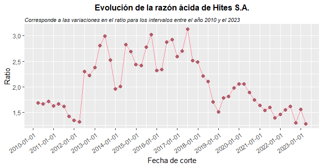
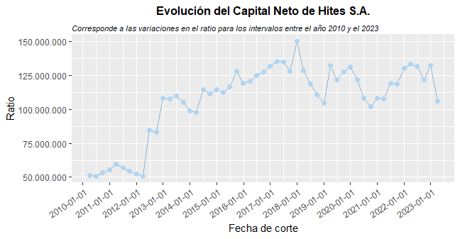

Analítica de Datos para la auditoría mediante lenguaje R
Esta página está destinada a mantener un registro de los plots obtenidos en un estudio de
caso de auditoría financiera.
Objetivo General: Identificar las capacidades y limitaciones que tienen
las librerías forecast y stringr para ser aplicadas en el campo de la auditoría.
Si deseas ver el código fuente con el cual fue desarrollada la base de este proyecto, puedes
encontrarla acá
forecast: Este paquete busca generar pronósticos en base a la información contenida en una base de datos. Para efectos de esta investigación, solamente se tendrán en consideración los modelos ARIMA y ETS.
stringr: Esta librería ofrece diferentes funciones para poder trabajar con cadenas de caracteres.
Datos de los Estados Financieros
 